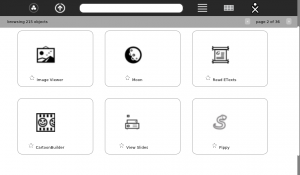

Estimada Comunidad,
Sugar Network es una red descentralizada de soporte y distribución de
contenido.
Mejorar el Sistema es la interfase de usuario para interactuar con la comunidad de aprendizaje.

Como miembros del equipo de investigación y desarrollo Somos
Azúcar, miembros de la comunidad Sugar Labs y de su equipo
de plataforma, estamos orgullosos de presentar el avance funcional (hasta la fecha)
de nuestro trabajo en los proyectos Sugar Network y Distribución Harmónica.
Este proyecto es la base de la plataforma Hexoquinasa,
la cual está programada para ser piloteada en terreno en Perú
a partir de Junio de 2012.
Esperamos que la comunidad comparta nuestro entusiasmo en
probar estas herramientas que estamos desarrollando y desde ya
contamos con su retroalimentación para mejorarlas.
Sin más, he traducido las notas de entrega de Aleksey Lim,
quien es el desarrollador del back-end. La interfase de
usuario está siendo desarrollada por su servidor, con el diseño
conceptual de Laura Vargas y algunos comentarios de otros
miembros de la comunidad.
Quedamos atentos a su experiencia probando la v0.1.
Porfavor tengan en cuenta que se trata todavía de un primer
prototipo funcional, cuya interfase de usuario cambiará
bastante todavía.
Atenciosamente,
Sebastian Silva
/ Sigue mensaje de Alsroot traducido con algunas aclaraciones /
Notas de Entrega
Hola a todos!
Esta es la primera entrega, al menos compuesta de esta manera, del
desarrollo público de los proyectos que están siendo desarrollados
dentro del marco del esfuerzo Distribución Harmónica, iniciado para
dar soporte al Proyecto Piloto Hexoquinasa (Peru) [6]. Esta entrega
debería ser considerada como un adelanto de algunas de las ideas
detrás de Distribución Harmónica y sus componentes.
Es posible encontrar más información sobre Distribución Harmónica
en la Wiki [1]. En pocas palabras, se trata de una aproximación
sistémica para proveer las bases de brindar soporte a las actividades
de los participantes de la Plataforma de Aprendizaje Sugar/Azúcar.
Consiste de dos partes principales:
Accesible desde repositorios de paquetes para todas las plataformas
con soporte de Distribución Sweets. Habrá dos meta-componentes:
Ambiente de propósito general de Sucrosa (Sugar) e instrumentos
para su integración con el resto del sistema
Servidor para escuelas de propósito general que consiste en los
componentes de Server Kit (puede ser usado independientemente)
Este Software existe bajo la forma de soporte de corto-plazo
(principalmente para uso individal) y largo-plazo (principalmente para
despliegues).
Estos servicios serán proporcionados mediante Sugar Network:
- Compartir el sofware de la comunidad, es decir, el resto del software además del básico (Actividades, etc)
- Compartir diferentes tipos de contenidos, por ejemplo artefactos creados mediante Actividades de Sugar, libros, etc.
- Realizar trabajo colaborativo entre los participantes de Sugar Network para "mejorar el sistema" - Software, Contenidos y proceso de aprendizaje en general.
Sugar Network será gestionada desde el servidor central [master] y una
cantidad arbitraria de nodos distribuídos en servidores (para los casos
de no-conectividad). Por ejemplo, para el piloto Hexoquinasa, se usarán
laptops XO-1.5 para este propósito.
En esta entrega
Esta entrega se trata de:
- El repositorio SweetsDistribution:Factory con Glucose-0.94 y el navegador de Sugar Network ("Mejorar el Sistema") que será usado en el pilotaje de Hexoquinasa.
- Servidor de Sugar Network (http://18.85.44.120:8000) que contiene un espejo de las actividades de la biblioteca de Actividades de Sugar
Para instalar el repositorio Factory en todas las plataformas soportadas,
copiar en la terminal:
wget http://download.sugarlabs.org/packages/sweets-distribution.sh
sudo sh sweets-distribution.sh select Factory
Estos comandos añaden el repositorio de Sweets Distribution (Factory) al
sistema (es posible hacer lo mismo manualmente añadiendo los repositorios
directamente). Luego instalar el paquete "sweets-desktop" usando el sistema
de paquetes nativo de su distribucion ("apt-get install sweets-desktop" o "yum
install sweets-desktop").
Para iniciar el nuevo entorno Sugar instalado, hacer click en el ítem "Sugar"
ubicado en el menu "Educación" o para verlo en pantalla completa se puede
invocar desde la terminal:
sweets-sugar-emulator -f
Los paquetes instalados, en su mayor parte, no debieran interferir con el
sistema. Por ejemplo, será posible ejecutar desde una XO (que use Fedora-14)
incluso desde Sugar nativo.
Para activar la integración de los servicios de Sugar Network en el
entorno Sugar,
- acceda al componente "Sweets" del panel de control "Mis Ajustes"
- active la opción "Integrate Sweets Distribution features"
- reinicie el entorno
Luego de reiniciar,
- La vista hogar estará vacía - el proceso interno de la integración con Sugar Network está en un estado intermedio
- use F8 o el marco para acceder al navegador de Sugar Network (ícono con tres puntos y un círculo).
En la vista F8,
- navegue por las actividades del servidor
- búsqueda avanzada de texto
- inicio (descarga e instalación) de actividades (solo aquellas que sean hechas en Python puro y sin dependencias externas)
- en la vista detallada de cada actividad, hay una implementación inicial de un formulario para la creación de nuevos recursos de soporte (preguntas, ideas y problemas)
- los recursos de soporte pueden ser explorados en la vista detallada
- es posible navegar por los recursos de soporte de todo el sistema y también los usuarios
Plan para v0.2 (planeada para el 30 de Abril)
http://wiki.sugarlabs.org/go/Platform_Team/Harmonic_Distribution/1.0/Todo#0.2
- continuar trabajando en la aplicación de navegación de Sugar Network
- soporte básico para procedimientos que necesitan ser implementados para el piloto de Hexoquinasa.
Aleksey Lim

{kind=link}
{kind=link}
{kind=link}
{kind=link}
{kind=link}
{kind=link}